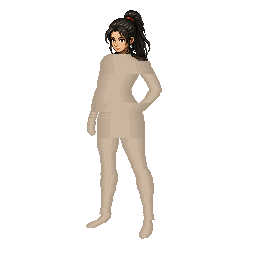
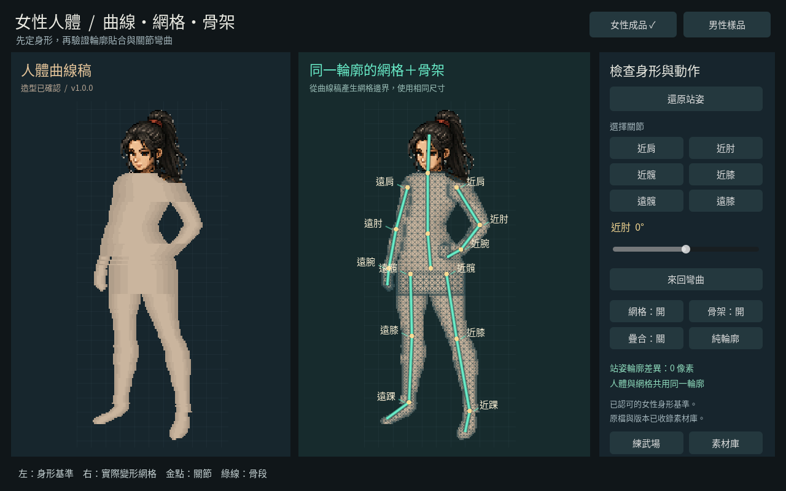
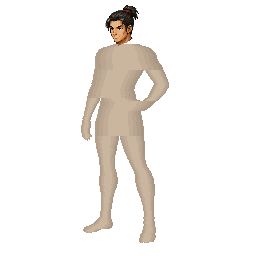
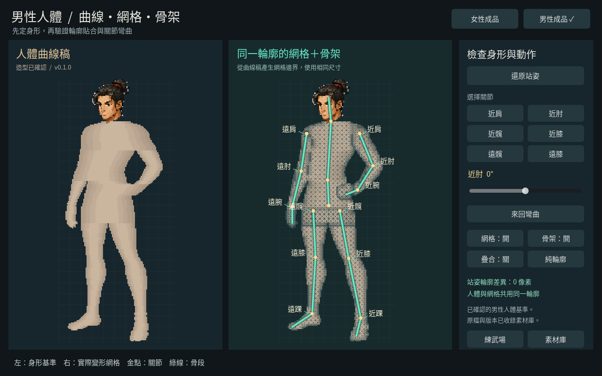

human-female-base女性人體已確認成品  v1.0.0人體曲線可變形網格獨立關節骨架畫布256 × 256人體分件5 件骨骼15 根輪廓差異0 像素 操作曲線＋骨架 ↗Aseprite 原檔 ↓ 素材紀錄與實測截圖素材紀錄使用說明驗證紀錄檔案清單彎肘截圖 ↗彎膝截圖 ↗
human-male-base男性人體已確認成品  v0.1.0人體曲線可變形網格獨立關節骨架畫布256 × 256人體分件5 件骨骼15 根輪廓差異0 像素 操作曲線＋骨架 ↗Aseprite 原檔 ↓ 素材紀錄與實測截圖素材紀錄使用說明驗證紀錄檔案清單彎肘截圖 ↗彎膝截圖 ↗